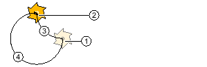

To program a circle or arc with a known radius, use the "Circle radius" function.
The tool traverses a circular arc with the programmed radius from its actual position to the programmed target position at the machining feedrate. To do this, the system calculates the position of the circle center point.
You can choose to traverse the arc in the clockwise or anticlockwise direction. Depending on the direction of rotation, there are two options for approaching the target position from the current position via an arc of the specified radius.
You can select the arc of your choice by entering a positive or a negative sign for the radius.
① | Start |
② | Target |
③ | Opening angle up to 180° |
④ | Opening angle greater than 180° |
Opening angle
Procedure
1. | The ShopTurn program to be processed has been created and you are in the editor. | |
| | 2. | Press the menu forward key and the "Straight Circle" softkey. |
3. | Press the "Circle radius" softkey. |